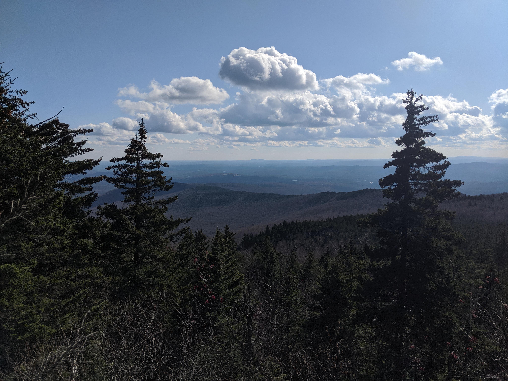
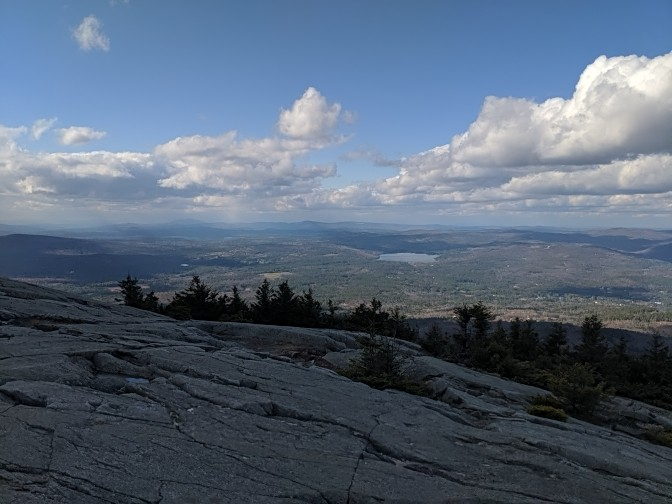

Distance
Distance Elevation
Elevation Observed Wildlife
Observed WildlifeThis long, but not overly strenuous, hike brought my sister, brother-in-law, and me to a summit with some nice views. There is also a vista halfway up.



